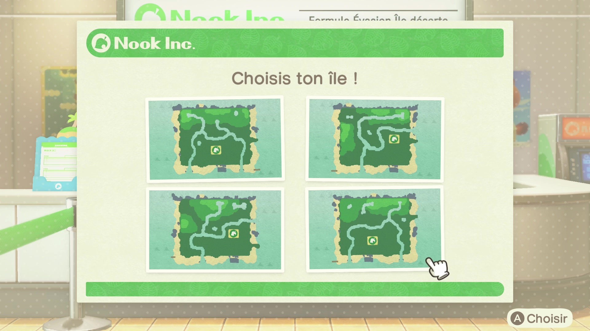

Dans la franchise Animal Crossing, tous les personnages sont des animaux sauf vous, le joueur. Cet opus se joue en temps réel et les saisons se basent sur l'hémisphère que vous choisissez en début de partie (nord ou sud).
 Lorsque vous commencez votre partie, Méli & Mélo vous parle de la Formule Evasion qui vous permet de déménager sur une île déserte. Vous devez alors choisir une des quatres îles ci-contre.
Après la personnalisation de votre personnage, vous arrivez ensuite sur une île déserte. Vous êtes accompagné de deux
animaux, dont l'un sportif et l'autre grande sœur (personnalités), qui se sont eux aussi procuré le forfait Évasion.
Votre aventure peut enfin commencer !
Le but suprême est d'atteindre une note de 5 étoiles pour votre île. Pour y arriver, vous pouvez suivre les principales quêtes qui sont détaillés dans notre page dédiée aux objectifs du jeu !